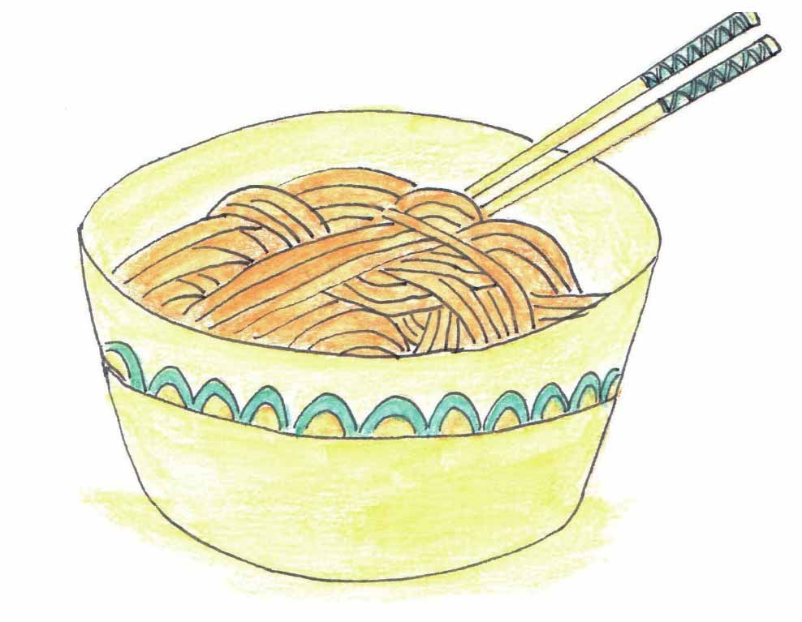

爸爸的爷爷和爷爷的爸爸是同一个人吗？
小文，你爸爸的爷爷跟你爷爷的爸爸是同一个人吗？
答案是肯定的。
这是因为你爸爸的爷爷和你爷爷的爸爸同属父子（女）关系（设为R）的三次合成，即R。R。R=R3。
妈妈的外婆和外婆的妈妈是同一个人吗？
答案也是肯定的，因为你妈妈的外婆和你外婆的妈妈同属母子（女）关系（设为S）的三次合成，即S。S。S=S3。
那么，妈妈的奶奶与奶奶的妈妈是同一个人吗？
这样看来，妈妈的奶奶与奶奶的妈妈不是同一个人。这是因为，奶奶的妈妈其实涉及的关系运算是R。S。S，而妈妈的奶奶涉及的关系运算是S。R。S。
同样的道理，爸爸的外公和外公的爸爸也不是同一个人。
现在，你应该可以发现，关系也是可以运算的。
这一次，妈妈的邮件内容很少。
妈妈觉得与集合中的一些概念比起来，“关系”这个概念显得比较抽象，要通俗地解释有些难办。也难怪科德在刚提出关系数据库的时候，得不到IBM高层的关注。
这天早晨，天下大雨，小文破天荒地冒着大雨出去买她喜欢吃的凉面。
不一会儿，小文带着两份凉面颠颠儿地跑回来了，然后一边抱怨雨打湿了她的鞋，一边津津有味地吃起面来。
妈妈漫不经心地吃着，若有所思地喃喃自语：“吃面，小文在吃面。”
小文乐了：“是啊，我是在吃面，怎么了？”
妈妈：“是小文在吃面，不是面在吃小文。”
小文吃吃地笑着：“对！”
“因此，如果用有序对表示的话，〈小文，面〉不等于〈面，小文〉。”

〈小文，面〉≠〈面，小文〉
“当然。”
“你买的面多少钱一碗？”
“5块！”
“好，我们可以把信息扩展一下，就像这样：小文在吃一碗5块钱的凉面，时间是7月25日。”
小文：“这下包含的信息就多了。”
“是的，类似这样的信息，怎么在计算机中存储呢？——问题的关键是采用什么样的数据结构存储？”
“你不是说科德想了个好办法吗？”
“是的，科德想出这样一种办法，既不是树也不是网，而是用一种类似二维表的方法来存放这些数据。”妈妈一边说着，一边随手画了下面这张表：
小文：“这张表看起来很直观呢。”
“是的，你看这张表其实是由3个有序组合构成的：
“〈小文，凉面，5元，7.25〉；
“〈小文，豆浆，2元，7.25〉；
“〈小文妈妈，炸酱面，6元，7.26〉。
“由很多很多这样的有序组合构成的一张张‘二维表’，就是科德所说的‘关系’。哈哈，这样解释清楚吗？其余的自己看咯，我要到实验室去啦！”
妈妈说完，丢下几张讲义，踩着高跟鞋，“噔噔噔”地出门了。